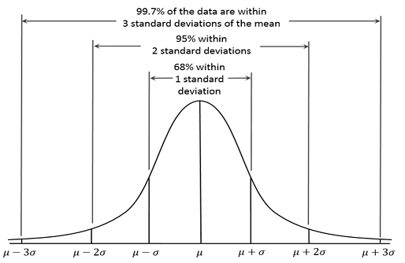

This week you’ll learn how to derive confidence intervals and test hypothesis after estimation.
Reminder
Standard Deviation (SD):
Standard Error (SE):
Confidence intervals
\[
\bar{Y} \pm z \times \sigma
\]
\[
\bar{Y} \pm z \times \frac{\sigma}{\sqrt{T}}
\]
where \(T\) is the lenght of the timeseries
For a population with unknown \(\mu\) and \(\sigma\) :
\[
\bar{Y} \sim \mathcal{t_{\nu}}
\]
\[
\bar{\mu} \pm t \times \frac{s}{\sqrt{T}}
\]
Common Confidence intervals
\(68\% \rightarrow \bar{Y} \pm 1.036 \times \frac{\sigma}{\sqrt{T}}\)
\(90\% \rightarrow \bar{Y} \pm 1.645 \times \frac{\sigma}{\sqrt{T}}\)
\(95\% \rightarrow \bar{Y} \pm 1.960 \times \frac{\sigma}{\sqrt{T}}\)
\(99\% \rightarrow \bar{Y} \pm 2.576 \times \frac{\sigma}{\sqrt{T}}\)

Q18.
In a developed country with data for a long period, \(t = 1, 2, \cdot , T\) , the real return on equities,\(Y_t\) seems to have been independently distributed with an average real return of 5% with a standard deviation of 10%. These can be taken as known.
(a) Assuming that the distribution is normal, what is your forecast for re turns in \(T + l\) :
if we assume that the distribution is normal then we can write
\(Y_t = 5 + u_t\) where \(u_t\) is a RV with mean zero and variance \(10^2\)
Formally
\[
Y \sim \mathcal{IN}(5,\,10^{2})\,.
\]
\(\mathop{\mathbb{E}}(Y_{t+1})= \mathop{\mathbb{E}}(Y_{t})= 5%\)
(i) 68% confidence interval
\(5 \pm 1.036 \times 10 = 5 \pm 10.36\)
(ii) 90% confidence interval
\(5 \pm 1.645 \times 10 = 5 \pm 16.45\)
(iii) 95% confidence interval
\(5 \pm 1.960 \times 10 = 5 \pm 19.60\)
(b) Again assuming that the distribution is normal, What is your forecast for average returns over the next 25 years: T + l, .. , T + 25
\(\bar{\mu} = \frac{1}{25} \sum \mu = \frac{1}{25} \times (25 \times 5) = 5\)
(i) 68% confidence interval
\(5 \pm 1.036 \times \frac{10}{\sqrt{25}} = 5 \pm 1.036 \times \frac{10}{5} = 5 \pm 1.036 \times 2 = 5 \pm 2.07\)
(ii) 68% confidence interval
\(5 \pm 1.645 \times \frac{10}{\sqrt{25}} = 5 \pm 1.645 \times \frac{10}{5} = 5 \pm 1.645 \times 2 = 5 \pm 3.29\)
(iii) 95% confidence interval
\(5 \pm 1.960 \times \frac{10}{\sqrt{25}} = 5 \pm 1.960 \times \frac{10}{5} = 5 \pm 1.960 \times 2 = 5 \pm 3.92\)
Q19.
In an emerging market with only 9 years of data the estimated mean is 5% and estimated sample standard deviation is 10%. However, the data does seem independently normally distributed.
(a) What is the formula used for calculating the sample standard deviation in this case.
\[
S(Y) = \sqrt{ \frac{(Y_t - \hat{\alpha})^2}{T-1}} = \sqrt{ \frac{(Y_t - \hat{\alpha})^2}{9-1}}
\]
(b) What is your forecast for returns in T + l
\(\mathop{\mathbb{E}}(Y_{t+1})= \mathop{\mathbb{E}}(Y_{t})= 5%\)
Note
Here we are using and estimate of the standard deviation so we use the t-distribution table with \(\nu=8\) degrees of freedom
(i) 90% confidence interval for forecast
\(t_8 = 1.860\) for 90%
\(5 \pm 1.860 \times 10 = 5 \pm 18.60\)
(ii) 95% confidence interval for forecast
\(t_8 = 2.306\) for 95%
\(5 \pm 2.306 \times 10 = 5 \pm 23.06\)
(c) What is your forecast for average returns over the next 25 years: T + 1, .. , T + 25,
The forecast does not change and is equals to the expected value
\(\bar{\mu} = \frac{1}{25} \sum \mu = \frac{1}{25} \times (25 \times 5) = 5\)
(i) 90% confidence interval for forecast
\(t_8 = 1.860\) for 90%
\(5 \pm 1.860 \times \frac{10}{\sqrt{25}} = 5 \pm 1.860 \times 2 = 5 \pm 3.72 \)
(ii) 95% confidence interval for forecast
\(t_8 = 2.306\) for 95%
\(5 \pm 2.306 \times \frac{10}{\sqrt{25}} = 5 \pm 2.306 \times 2 = 5 \pm 4.612 \)
Q20.
Over a long period of time marks on an exam have been normally distributed with mean 55 and standard deviation of 12. Suppose you ob serve that a class of 16 students has an average mark of only 50.
(a) Test whether this is significantly different from the long-run mean. Use the long run standard deviation, the 5% level and a two sided test, with a critical value of ± 1.96.
\[
\tau = \frac{50-55}{\frac{12}{\sqrt{16}}}=\frac{-5}{3}=-1.67
\]
check range using confidence interval (\(\alpha\) ): \(\alpha=5\%\)
Check whether the calculated test statistic is within the critical values, in which case → fail to reject the \(H_0\)
(b) How would your answer have changed had there been 100 students in the class.
We apply the same methodology as above but on the second step we change 16 to 100
\[
\tau = \frac{50-55}{\frac{12}{\sqrt{100}}}=\frac{-5}{1.2}=-4.17
\]
(c) How would your answer have changed if in the class of 16 you had tested at the 5% level whether the average was significantly less than the long-run mean.
Note here we have a one tailed test
Repeat steps 1-4 from (a):
\[
\tau = \frac{50-55}{\frac{12}{\sqrt{16}}}=\frac{-5}{3}=-1.67
\]
(d) How would your answer have changed if in the class of 16 you had tested at the 5% level whether the average was significantly less than the long-run mean but used an estimated standard deviation for that class, which was also 12.
The test statistic is the same as in (a) but the critical value is the one-tailed 5% for a t-distribution with (16-1) Dof which is -1.753
\[
\tau = \frac{50-55}{\frac{12}{\sqrt{16}}}=\frac{-5}{3}=-1.67
\]
check range using confidence interval (\(\alpha\) ): \(\alpha=5\%\)
Check whether the calculated test statistic is within the critical values, in which case → fail to reject the \(H_0\)